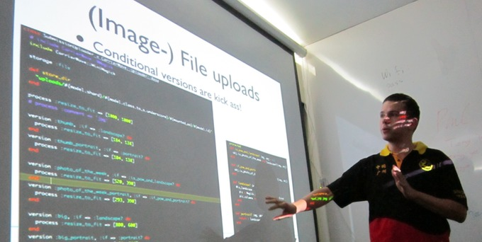

Thanks to everyone who attended the gzruby meetup last wednesday night. It was great to get a chance to meet up with our ruby friends and we also met a lot of new people. It‘s exciting to see how the community is growing as we gain new members and introduce more people to the joys of ruby.
非常感谢大家抽空过来参加昨晚的gzruby聚会。不仅可以跟使用ruby的老友记们交流，而且也是一次认识新朋友的好机会。很高兴看到使用ruby的朋友越来越多，并且可以相互分享当中的快乐。
The presentations included / 以下是大家的一些分享：
- Launch of http://gems.gzruby.org, the GZRUBY rubygems mirror
- Real Life Rails Scaling, by Seb. Scaling your app, your team, and yourself. (slides)
- method_proxy - some fun with ruby’s dynamic programming, by Jev. A look at how we can utilize ruby’s meta-programming features to get deep insight into our code. (method_proxy sample code, slides)
- Cloud Service API design, by Chance Jiang
Really looking forward to the next meeting, planned for Jan 18, 2012! See you all next year.
让我们一起期待下一次gzruby聚会，2012年1月18日（预计）。 明年见！
Photo by/ 照片提供：littlepxy